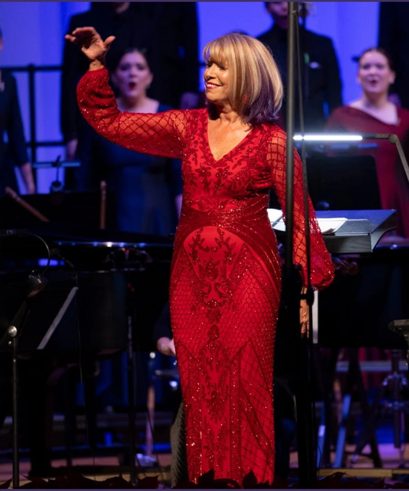
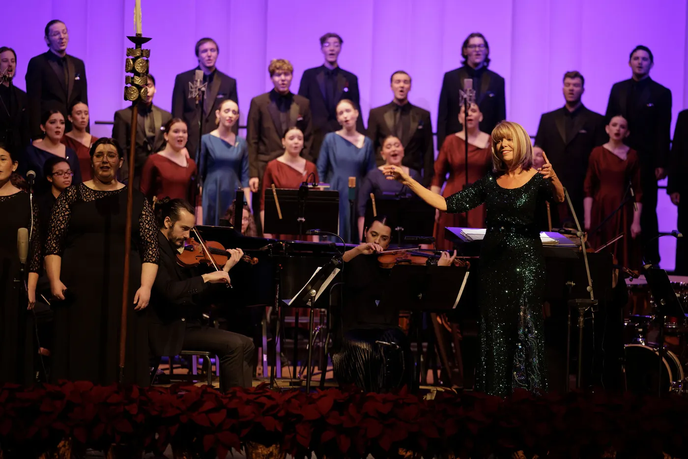
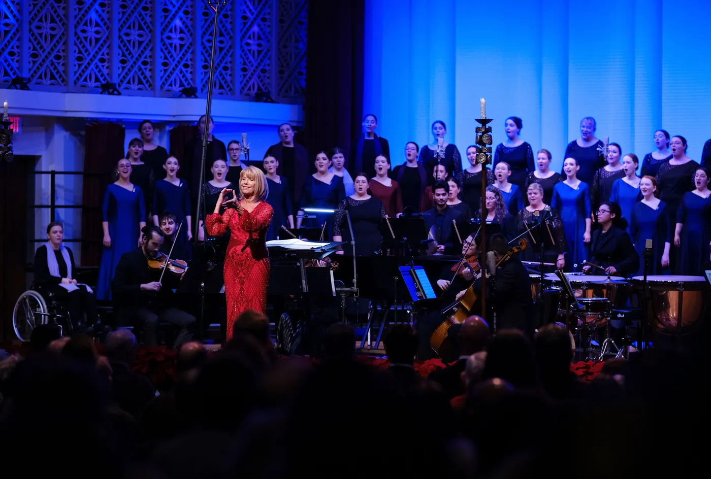
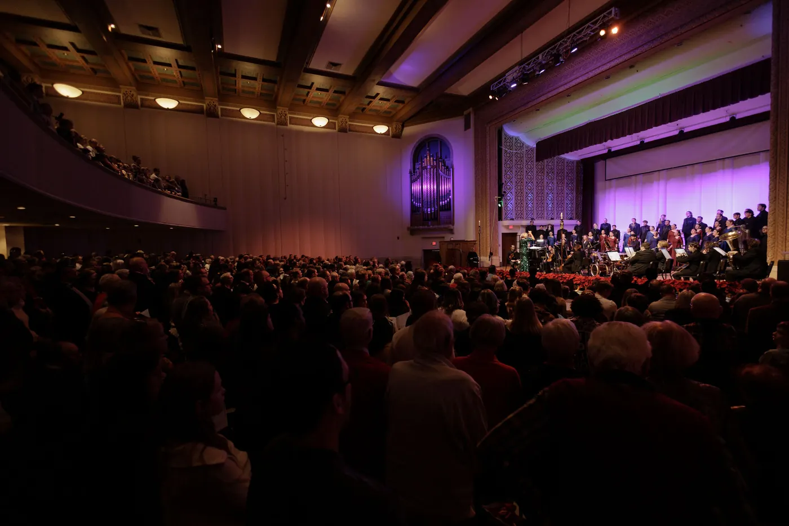
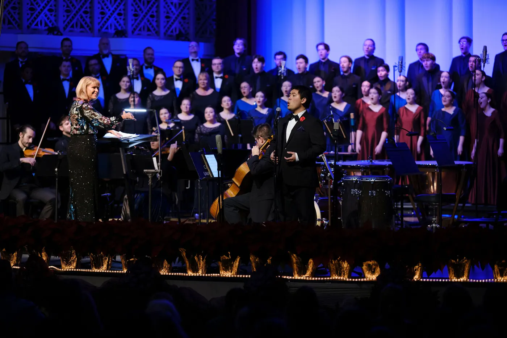
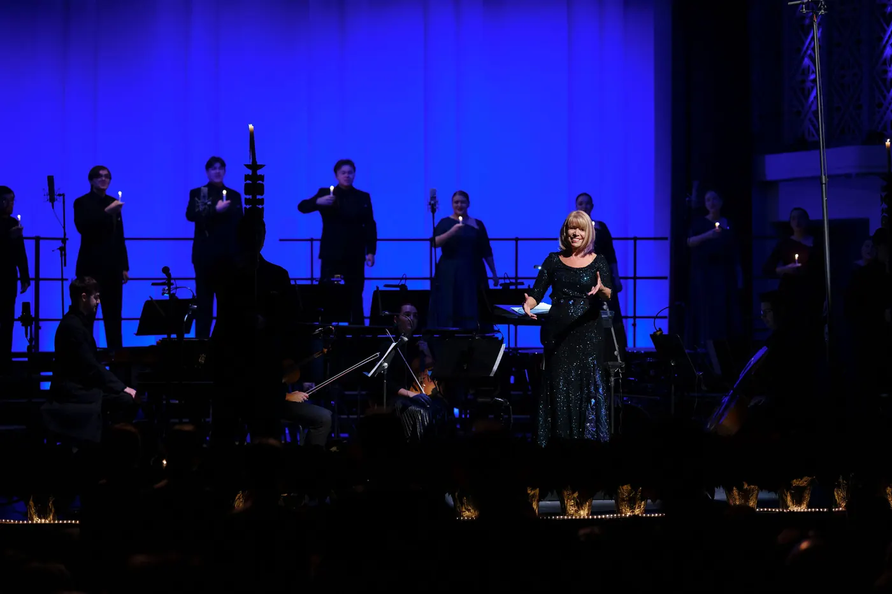

Lynda Hasseler
Director of Choral Activities, Capital University, 1990–2026
Thirty-five years of chasing beauty with the choirs of Capital University.

For thirty-five years, Lynda Hasseler led the choirs of Capital University, shaping a Chapel Choir heard at national conferences, on international stages, and before a full Mees Hall every Christmas.
35
Years leading Capital’s choirs
First
Woman to head a choral program at a Lutheran college or university
Two golds
World Choir Games, Cincinnati, 2012
Grammy
Best Choral Performance, shared with the Oregon Bach Festival Chorus
Carnegie Hall
Conducting debut, 2016
American Prize
Ernst Bacon Memorial Award, 2017–18
Thank you for being part of the music
For thirty-five years I had the joy of making music with the singers of Capital University, in the Chapel Choir and Choral Union, at the Christmas Festival, and in more rehearsals than I could ever count. Whether you sang with us, taught alongside me, or listened from the audience, you are part of that story.
Now that I have retired from Capital, this site is a place to stay connected. Over time it will grow into an archive of the music we made together and a home for the teaching ideas behind it.
With gratitude,
Lynda
Conductor and mezzo-soprano
A conductor who makes choirs tell a story
Lynda R. Hasseler, D.M.A., served as Professor of Music and Director of Choral Activities in the Conservatory of Music at Capital University in Columbus, Ohio, from 1990 until her retirement in 2026. When she took the helm of the Chapel Choir in 1990, she became the first woman to head a choral program at a Lutheran college or university.
A native of Platte, South Dakota, she graduated from Calvin College in Grand Rapids, Michigan, and earned her Master of Music and Doctor of Musical Arts degrees in conducting from Michigan State University.
At Capital she directed the Chapel Choir, founded by Ellis E. Snyder in 1928, along with the Choral Union and the a cappella ensemble Philomel, and taught undergraduate and graduate conducting at Capital and at Trinity Lutheran Seminary. As director and producer of the university’s beloved Christmas Festival, she filled Mees Hall to capacity every December.
The Chapel Choir years
She took the Chapel Choir across the United States and around the world: to Germany, Austria, and the Czech Republic for its 75th anniversary in 2003, then to France and Switzerland, South Africa, Ireland, Spain, the Netherlands and Belgium, and, on its first visit to South America, Chile and Argentina. Her choirs sang for ACDA Central Division conferences in 2002, 2010, 2014, and 2018, the ACDA National Conference in 2019, and the Ohio Music Education Association.
In 2012 the Chapel Choir entered its first competition of any kind, the World Choir Games in Cincinnati, and won gold medals in both the Mixed Choirs and Musica Sacra categories of the Champions Competition. It finished second in the world among mixed choirs, with the highest composite score of any American choir. In 2016 it gave its solo debut on the Carnegie Hall stage.
She championed new music. With the Chapel Choir, the Choral Union, and composer Jake Runestad, she shares the 2017–18 American Prize, Ernst Bacon Memorial Award for the Performance of American Music. In 2019 she led the premiere of Runestad’s A Silence Haunts Me, ACDA’s Brock Commission, at the American Choral Directors Association National Conference in Kansas City. A project she began in 2020 led to the commissioning of Dark Matters by composer Joel Thompson and poet Samiya Bashir, which her choirs premiered in Mees Hall in April 2023. In 2017 she launched Capital’s Young Choral Artists Festival, with Runestad as its first composer-in-residence.
Her programming drew on classic and contemporary a cappella literature, sacred and secular, chosen from a global perspective. Her choirs became known for diverse repertoire, thoughtful staging, and a range of tone colors suited to each style, and her narrative, theme-based concerts were built to tell a story. Her final season closed with Buscar y Cantar, a farewell tour to Chile and Argentina in June 2026.
On the podium
Dr. Hasseler travels widely as a clinician, guest conductor, and presenter. She made her Carnegie Hall conducting debut on Leap Day, February 29, 2016, in Leonard Bernstein’s Chichester Psalms and Ēriks Ešenvalds’ Trinity Te Deum, and returned to conduct festival choruses there in 2024. She has led All-State choirs in South Dakota, Michigan, and Colorado, headlined the ACDA Michigan and Pennsylvania conferences, guest-conducted a Festival of Choirs in Muscat, Oman, and served on international juries, including the 14th Concorso Corale Internazionale in Riva del Garda, Italy, and Sing Berlin! in 2018.
She has served on the Music for All National Artistic Advisory Committee and as president of the South Central Region of Ohio ACDA. With composer Craig Courtney, she has served as co-editor of the Capital University Choral Series, published by Beckenhorst Press, which includes her arrangement of Come to the Water and their joint arrangement of I Will Rise.
As a singer
A mezzo-soprano, she has performed, toured, and recorded with the Robert Shaw Festival Chorus and the Oregon Bach Festival Chorus, singing in Carnegie Hall with both. She toured France with the Shaw Festival Chorus, appearing as a soloist, and toured internationally with the Oregon Bach Festival Choir, performing in Kraków and Warsaw, Santiago de Compostela, and Frankfurt and Stuttgart. She shares in the Grammy Award for Best Choral Performance won by the Oregon Bach Festival Chorus and Orchestra under Helmuth Rilling for Krzysztof Penderecki’s Credo, presented at the 43rd Grammy Awards in 2001. At home in Columbus she also sang with the Cantari Singers and Vocal Colour.
Beyond the music
A firm believer in the power of choral singing to open minds, soften hearts, and transform lives, she will tell you that an engaged rehearsal, an expressive phrase, and beautiful choral tone shaped with the “best students in the world” are among life’s most meaningful moments. Only one thing tops them all: being mom to Hannah, the “best daughter in the whole world.”
Selected moments
- 1990
Takes the helm of the Capital University Chapel Choir, founded in 1928, as the first woman to head a choral program at a Lutheran college or university.
- 2001
Shares in the Grammy Award for Best Choral Performance, presented at the 43rd Grammy Awards to the Oregon Bach Festival Chorus and Orchestra for Penderecki’s Credo. The same year she conducts the South Dakota All-State Chorus in her home state.
- 2003
Leads the Chapel Choir’s 75th-anniversary tour to Germany, Austria, and the Czech Republic, singing in Leipzig’s Thomaskirche and Wittenberg’s Castle Church.
- 2011
Tours South Africa with the Chapel Choir, sharing a concert with the Stellenbosch University Choir.
- 2012
In its first competition of any kind, the World Choir Games in Cincinnati, the Chapel Choir wins two gold medals in the Champions Competition, places second in the world among mixed choirs, and posts the highest composite score of any American choir.
- 2014
Leads the Chapel Choir at the ACDA Central Division and Ohio Music Education Association conferences, then on tour to Northern Ireland and the Republic of Ireland.
- 2016
Makes her Carnegie Hall conducting debut on Leap Day, the same season the Chapel Choir gives its solo debut on the Carnegie Hall stage.
- 2017
Launches Capital’s Young Choral Artists Festival, with Jake Runestad as composer-in-residence.
- 2018
Wins the American Prize, Ernst Bacon Memorial Award, with the Chapel Choir, Choral Union, and Runestad, and headlines the ACDA Michigan Fall Conference.
- 2019
Premieres Runestad’s A Silence Haunts Me, ACDA’s Brock Commission, at the national conference in Kansas City. Shares the podium with Eric Whitacre to celebrate a century of music at Capital, and tours the Netherlands and Belgium.
- 2020
Returns to Carnegie Hall for the New York debut of A Silence Haunts Me, and conducts a 280-voice festival chorus and orchestra in Vaughan Williams’ Dona Nobis Pacem.
- 2023
Leads the premiere of Dark Matters by Joel Thompson and Samiya Bashir, a commission her own initiative set in motion, and takes the Chapel Choir to Spain, singing in Barcelona’s Sagrada Família.
- 2026
Prepares the choir that sings with Andrea Bocelli to open his Romanza anniversary tour in Columbus, leads the Chapel Choir’s first tour of South America, and retires after thirty-five years. Alumni return to Mees Hall at Homecoming to sing in her honor.
Selected recordings
- Lo, How a Rose E’er BloomingChristmas Festival 2003, CD
- Seeking Light and BeautyEuropean Tour 2006, CD
- And the Glory of the Lord Shone RoundChristmas Festival 2012, DVD
- Dark Matters2023, on streaming services
- Fear Not, I Am With YouChristmas Festival 2024, CD
- Live from the conferencesOMEA 2009, 2011, and 2018; ACDA Central Division 2014
In the rehearsal room
Dr. Hasseler built a culture of disciplined preparation, ensemble integrity, and meaningful storytelling through music. Her approach is rooted in a deep connection to text, sound, and expression, and it asks singers to bring their whole hearts to the work.
Preparation
Fast-paced, focused rehearsals that build musicianship and leave room for artistry.
Tone and text
A range of tone colors shaped to each style of music, always in service of the words.
Story
Narrative, theme-based programs that carry an audience from the first note to the last.
Out of the 4-Pattern and into the Heart
Teaching “open hearted singing” with rehearsal techniques that build beautiful choral tone, develop musicianship, encourage expressiveness, and nurture emotional intelligence and vulnerability.
ACDA Michigan Fall Conference, 2018, and ACDA Pennsylvania Summer Conference, 2019
Ideas from her rehearsal room
- It’s all the same vowel
- Let no tone go unstirred
- No two notes should sound the same
- Pick-up notes belong
- The expression lies in the consonants
- Looking like the music should sound





We’ll laugh, we’ll cry, we’ll chase beauty, and we’ll heal hearts, including our own.
Lynda Hasseler
In the words of others
Marie Bucoy-CalavanDirector of Choral Studies, The University of Akron, and Chorus Director, Akron SymphonyAdmittedly, growing up, there weren’t as many female choral conductors that I had to look up to. While in my doctoral program, however, I was assigned to work at the World Choir Games in Cincinnati, and it was there that I was able to watch Capital University’s Chapel Choir, led by Dr. Lynda Hasseler. That ensemble sang with a palpable fervor and passion, and an obvious love and respect for their director.
The familial environment that Dr. Hasseler had built with the ensemble was apparent throughout their performance. In addition, Dr. Hasseler is unabashedly herself on the podium, from her edgy haircut to her collection of beautiful gowns. I’ve since gotten to know her off the podium, and she has been nothing but kind, supportive, and humble. She embodies the spirit of the kind of conductor that I want to be, emitting a graceful confidence and strength in her femininity.
Jared R. Tice, Ed.D.President, Capital UniversityFor more than three decades, she has pursued and embodied artistic excellence at the highest level, shaping not only a premier choral program, but generations of students who have been challenged, refined, and inspired by her exacting standards, remarkable musicianship, and deep devotion to the power of choral art.
In the press
Each year in early December, Lynda Hasseler sculpts all of the university’s choirs into a rich and beautiful holiday offering.
If you haven’t yet been over to Capital to hear Hasseler’s choirs, GO!
More press
- World-renowned opera singer Andrea Bocelli performs with university choir students (opens in a new tab)The Chimes · Evie Swick · February 21, 2026
- Christmas Festival: 95 years of a choral spectacle (opens in a new tab)The Chimes · November 15, 2023
- Columbus Choirs: How Can We Keep From Singing? (opens in a new tab)WOSU Classical 101 · Christopher Purdy · May 18, 2020
- Capital University Chapel Choir Will Perform at the 2021 National Choir Festival (opens in a new tab)Music for All · January 31, 2020
- Two World Premieres Mark 100th Anniversary of Capital University’s Conservatory of Music (opens in a new tab)WOSU, The American Sound · Jennifer Hambrick · March 29, 2019
- Eric Whitacre and Capital University’s Lynda Hasseler Talk About Choir Stuff, and a New Project (opens in a new tab)WOSU, The American Sound · Jennifer Hambrick · March 28, 2019
- Chapel Choir to tour the northeast (opens in a new tab)The Chimes · Maura Fortino · February 18, 2016
From Capital University
- Capital University Announces Retirement of Dr. Lynda R. Hasseler After 35 Years of Distinguished Service (opens in a new tab)Capital University news · April 16, 2026
- Buscar y Cantar: Chapel Choir South America Tour (opens in a new tab)Capital University · 2026
- “Dark Matters” Available on Streaming Platforms (opens in a new tab)Capital Stories · March 22, 2024
- New Artistic Collaborative Centers the Work Needed for a Better World in “Dark Matters” (opens in a new tab)Capital Stories · Rebecca Mohr · April 25, 2023
- Chapel Choir Takes World Choir Games Gold (opens in a new tab)Capital University news · Nichole Johnson · July 27, 2012 (archived copy)
This site is just beginning
The Archive
Concert programs, recordings, and photographs from thirty-five years of the Chapel Choir, Choral Union, and Christmas Festival.
Teaching Materials
Rehearsal techniques and writing on open-hearted singing, shared for conductors, teachers, and singers.
Stories & Memories
Remembrances from singers across the decades. Share yours below.
I’d love to hear from you
Leave your name and email and I’ll let you know as new things are added here. If you’d like, share a note or a favorite memory, too.
Your information is never shared.
Thank you.
I’m so glad you’re here. I’ll be in touch.